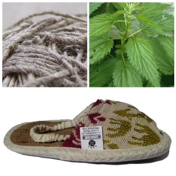
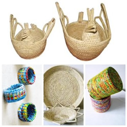
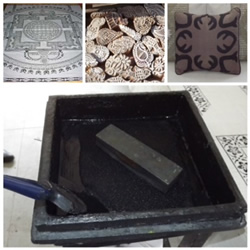
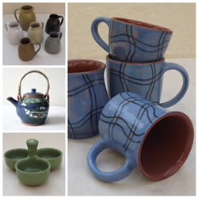
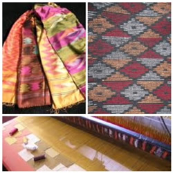
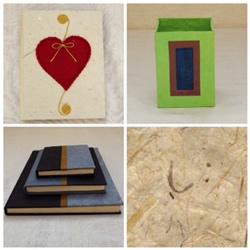
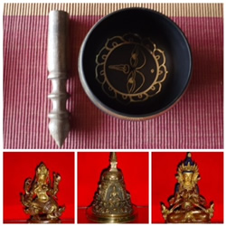

Allo |
|  |
The natural fibre of allo comes from the bark of giant nettle Girardinia diversifolia. It has been extracted for generations in the high mountain regions of Nepal (Sankhuwasabha, Dhankuta, Rolpa, Rukum). Allo is traditionally woven into cloth using an open back strap loom. Today, wooden looms are used to weave cloth, placemat and table runners. Allo thread is also knitted into vests, shawls, nets and a variety of new products ranging from bags, cushions covers, wallet, and clothing. Natural dyes are currently being produced and are favored by many 77buyers. |
Basketry and Novelty Weaving |
|  |
Baskets made in Nepal come in a variety of shapes, sizes, and colors – making them multifunctional. They are made from materials ranging from split cane to rice straw to bamboo to pine needles to recycled plastics. Vases, coasters, purses, trays, storage containers, and serving baskets are just a few of many available products. Whether you choose a traditional basket woven according to time honored methods or one of the innovative new products, you will have a unique yet typical piece of Nepalese culture. |
Block Printing |
|  |
Carving wooden blocks into traditional patterns and using them as prints is a time honored and highly skilled craft. With a history of printing on both paper and cloth, updated designs are now printed on specially prepared handmade paper and on hand loomed cotton fabrics, which in turn are used to create interesting products, such as unique stationary sets, clothing and household items like cushion covers, bed sheets, table cloths and napkins. |
Ceramics |
|  |
The ceramics industry in Nepal can be traced back back 2600 years and still continues to this day. Terra-cotta temples, built between 14th and 18th centuries, display superbly carved and lively sculpture motifs. Nepalese potters produce a range of quality ceramics product; earthenware statues, water and storage jars and flower pots are traditional products. Today, producers have added interesting glazes, all lead free, and are expanding their product lines into useful and decorative items, for example mugs, plates, tea pots, flower vases and bowls. |
Dhaka |
|  |
Dhaka is one of the handloom fabrics that is gaining more and more popularity amongst buyers. It is a traditional and intricate handwoven material that is valued for its artful handwork and natural fibers. Beautiful shawls and cloths are commonly made from Dhaka. This traditional pattern weaving is done on wood and bamboo treadle looms by Limbu and Rai women of the eastern hill area (Tehrathum) of Nepal. Each woven item is unique because of the changing of shed. The weaver decides, without chart or counting threads, which section of the warp she is going to lay the colors which form the pattern. |
Handmade Paper |
|  |
Nepalese craftspeople have been producing handmade paper for a thousand years. The people of Nepal use natural paper in their daily life, for example when writing valuable legal documents, creating sacred or popular masks and making kites. Likewise like monks of Tibet have always used it for their manuscripts and for printing sacred texts. This paper is renowned for its exceptional durability and for its lively and special texture. The bark from Daphne cannabina is used as the raw material. It is carried to villages where the paper-makers clean, boil and beat the bark to produce pulp. Sun dried sheets are then dyed, stenciled, printed and transformed into beautiful products by craftspeople. Today’s handcrafted paper products reflect the tradition of ancient and original Nepalese culture. Paper products include greeting cards, stationary sets, notebooks, gift wrapping paper, bags, envelopes and photo frames
|
Metal |
|  |
In Nepal, forging metal images is a very old art. Metal craft products include images of popular motifs of Hinduism and Buddhism, but also utilitarian utensils. These products are mostly produced by household units clustered around the city of Lalitpur (Patan). Metal images are produced with the lost-wax casting. This method of casting is done by preparing a wax model, covering it with varieties of clay, heating the piece so that the wax is melted, extracting the liquid wax so that cavity is created, pouring metal into the cavity, cooling it and transferring the original model into the metal image. The metal image from the casting is very rough. This rough image is then made smooth and made precise by chiseling. This complicated process requires an artist’s conception, an engineer’s perfection and the skillful hands of a craftsperson. |